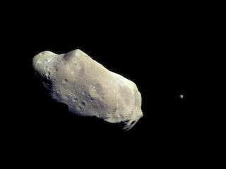

Most of this ancient space rubble can be found orbiting our Sun between Mars and Jupiter within the main asteroid belt. Asteroids range in size from Vesta - the largest at about 329 miles (530 kilometers) in diameter - to bodies that are less than 33 feet (10 meters) across. The total mass of all the asteroids combined is less than that of Earth's Moon.
Most asteroids are irregularly shaped, though a few are nearly spherical, and they are often pitted or cratered. As they revolve around the Sun in elliptical orbits, the asteroids also rotate, sometimes quite erratically, tumbling as they go. More than 150 asteroids are known to have a small companion moon (some have two moons). There are also binary (double) asteroids, in which two rocky bodies of roughly equal size orbit each other, as well as triple asteroid systems.
Composition
- The three broad composition classes of asteroids are C-, S-, and M-types.
- The C-type (chondrite) asteroids are most common. They probably consist of clay and silicate rocks, and are dark in appearance. They are among the most ancient objects in the solar system.
- The S-types ("stony") are made up of silicate materials and nickel-iron.
- The M-types are metallic (nickel-iron). The asteroids' compositional differences are related to how far from the Sun they formed. Some experienced high temperatures after they formed and partly melted, with iron sinking to the center and forcing basaltic (volcanic) lava to the surface.
The orbits of asteroids can be changed by Jupiter's massive gravity - and by occasional close encounters with Mars or other objects. These encounters can knock asteroids out of the main belt, and hurl them into space in all directions across the orbits of the other planets. Stray asteroids and asteroid fragments have slammed into Earth and the other planets in the past, playing a major role in altering the geological history of the planets and in the evolution of life on Earth.
Scientists continuously monitor Earth-crossing asteroids, whose paths intersect Earth's orbit, and near-Earth asteroids that approach Earth's orbital distance to within about 28 million miles (45 million kilometers) and may pose an impact danger. Radar is a valuable tool in detecting and monitoring potential impact hazards. By reflecting transmitted signals off objects, images and other information can be derived from the echoes. Scientists can learn a great deal about an asteroid's orbit, rotation, size, shape, and metal concentration.
Asteroid Classifications
- Main Asteroid Belt: The majority of known asteroids orbit within the asteroid belt between Mars and Jupiter, generally with not very elongated orbits. The belt is estimated to contain between 1.1 and 1.9 million asteroids larger than 1 kilometer (0.6 miles) in diameter, and millions of smaller ones. Early in the history of the solar system, the gravity of newly formed Jupiter brought an end to the formation of planetary bodies in this region and caused the small bodies to collide with one another, fragmenting them into the asteroids we observe today.
- Trojans: These asteroids share an orbit with a larger planet, but do not collide with it because they gather around two special places in the orbit (called the L4 and L5 Lagrangian points). There, the gravitational pull from the Sun and the planet are balanced by a trojan's tendency to otherwise fly out of orbit. The Jupiter trojans form the most significant population of trojan asteroids. It is thought that they are as numerous as the asteroids in the asteroid belt. There are Mars and Neptune trojans, and NASA announced the discovery of an Earth trojan in 2011.
- Near-Earth Asteroids: These objects have orbits that pass close by that of Earth. Asteroids that actually cross Earth's orbital path are known as Earth-crossers.
Comets

In the distant past, people were both awed and alarmed by comets, perceiving them as long-haired stars that appeared in the sky unannounced and unpredictably. Chinese astronomers kept extensive records for centuries, including illustrations of characteristic types of comet tails, times of cometary appearances and disappearances, and celestial positions. These historic comet annals have proven to be a valuable resource for later astronomers.
We now know that comets are leftovers from the dawn of our solar system around 4.6 billion years ago, and consist mostly of ice coated with dark organic material. They have been referred to as "dirty snowballs." They may yield important clues about the formation of our solar system. Comets may have brought water and organic compounds, the building blocks of life, to the early Earth and other parts of the solar system.
Where Do Comets Come From?
- As theorized by astronomer Gerard Kuiper in 1951, a disc-like belt of icy bodies exists beyond Neptune, where a population of dark comets orbits the Sun in the realm of Pluto. These icy objects, occasionally pushed by gravity into orbits bringing them closer to the Sun, become the so-called short-period comets. Taking less than 200 years to orbit the Sun, in many cases their appearance is predictable because they have passed by before.
- Less predictable are long-period comets, many of which arrive from a region called the Oort Cloud about 100,000 astronomical units (that is, about 100,000 times the distance between Earth and the Sun) from the Sun. These Oort Cloud comets can take as long as 30 million years to complete one trip around the Sun.
- Each comet has a tiny frozen part, called a nucleus, often no larger than a few kilometers across. The nucleus contains icy chunks, frozen gases with bits of embedded dust. A comet warms up as it nears the Sun and develops an atmosphere, or coma. The Sun's heat causes the comet's ices to change to gases so the coma gets larger. The coma may extend hundreds of thousands of kilometers. The pressure of sunlight and high-speed solar particles (solar wind) can blow the coma dust and gas away from the Sun, sometimes forming a long, bright tail. Comets actually have two tail-a dust tail and an ion (gas) tail.
- Most comets travel a safe distance from the Sun - comet Halley comes no closer than 89 million kilometers (55 million miles). However, some comets, called sungrazers, crash straight into the Sun or get so close that they break up and evaporate.
How Comets Get Their Names
- Comet naming can be complicated. Comets are generally named for their discoverer - either a person or a spacecraft. This International Astronomical Union guideline was developed only in the last century.
- For example, comet Shoemaker - Levy 9 was so named because it was the ninth short-periodic comet discovered by Eugene and Carolyn Shoemaker and David Levy. Since spacecraft are very effective at spotting comets many comets have LINEAR, SOHO or WISE in their names.